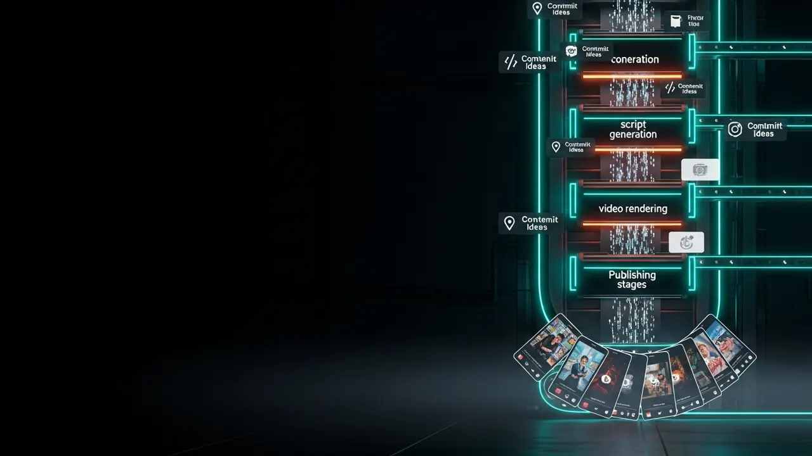

Comparison axis Axial fold: one cobalt spine turns ambiguity into evidence.
AI product leader Agent-systems builder
From ambiguity
to evidence.
I turn uncertain agentic-AI opportunities into useful products, operating systems, and proof.
See the workSelected work Delivered
The fold becomes a frame for proof.
Media sits inside the structure, never behind a readability wash.

Grammar, not decoration
Every edge has a job.
- Mountain
- Near-black edge. Separates narrative layers.
- Valley
- Warm-grey edge. Connects related evidence.
- Active fold
- Cobalt edge. Marks the current decision.